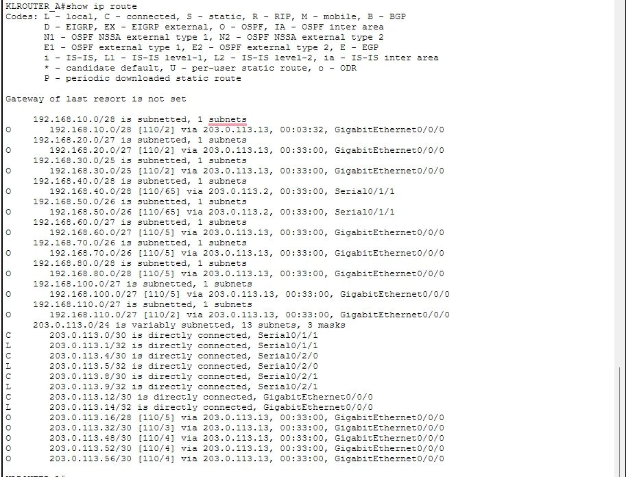

Static routes work for a network with two routers. For my four-site assignment (HQ plus three branches) I needed dynamic routing, so I used OSPF with everything in a single area, area 0. A single area is the simplest design and perfectly fine at this size. This article explains the setup I used, how I checked it, and which problems showed up on the links.
Why single area was enough
OSPF areas exist to limit how much routing information every router has to hold. With a handful of routers there is nothing to limit, so splitting the network into several areas would only add complexity. All WAN links and the HQ core links went into area 0. If this grew to dozens of routers I would revisit that.
The basic configuration
Each router starts an OSPF process and announces the networks on its interfaces. The headquarters router also has a default route to the ISP, and passes it on to everyone else with one extra line:
router ospf 1
network 203.0.113.0 0.0.0.3 area 0
network 192.168.10.0 0.0.0.15 area 0
default-information originate
!
ip route 0.0.0.0 0.0.0.0 203.0.113.42Note the wildcard mask in the network statements. It is the inverse of the subnet mask: a /30 becomes 0.0.0.3 and a /28 becomes 0.0.0.15. Getting this wrong is the most common reason a network does not join OSPF. (The ISP side of that default route is described in my NAT and floating route article.)
WAN links from a public block
Every point-to-point link between routers used its own /30 from the 203.0.113.0/24 block. A /30 gives exactly two usable addresses, which is all a router-to-router link needs, so nothing is wasted. Each link also ran IPv6, and the routers formed IPv6 neighbours as well as IPv4 ones. On the Malacca multilayer switch I could see both sets of neighbours.
How I verified it
I used three checks in the same order every time. First, show ip ospf neighbor, where I wanted to see the state FULL for every neighbour. Second, show ip route ospf or the whole routing table, to see routes with an O flag. Third, a ping from one branch to a host at another. If the neighbour is FULL but the ping fails, look at return routes and ACLs, not at OSPF.

The screenshot shows the branch subnets learned dynamically, each with an administrative distance of 110 and a metric. Different branches show different next hops and metrics because they sit behind different links.
Problems I ran into
- A native VLAN mismatch warning on a routed link. A CDP warning appeared on one core-to-router link, yet OSPF still reached FULL. The warning is about the Layer 2 configuration, not OSPF itself, and I fixed it separately on the trunk.
- An invalid mask on a WAN interface. I typed 255.255.255.253 as a mask and IOS rejected it. A valid /30 mask is 255.255.255.252. Subnet masks are made of consecutive ones, so an odd last octet is a giveaway.
- Return routes. My ISP router could not reply to anything until I added routes for my public block pointing back at my router. One-way connectivity is almost always a missing return route.
- Serial clock rate. On a serial link, only the DCE end accepts the
clock ratecommand. If IOS refuses it, you are on the wrong end of the cable.
If your neighbour never comes up
These are general checks rather than things I hit in this lab: confirm the two interfaces are in the same subnet, check that both sides use the same area number, make sure the interface is not set as passive, and compare hello and dead timers. Run show ip ospf interface to see most of this in one place.
OSPF only moves routes around. Keeping a gateway alive when one device fails is a different job, and that is where HSRP comes in; I wrote about it in HSRP and EtherChannel: Redundancy Basics.